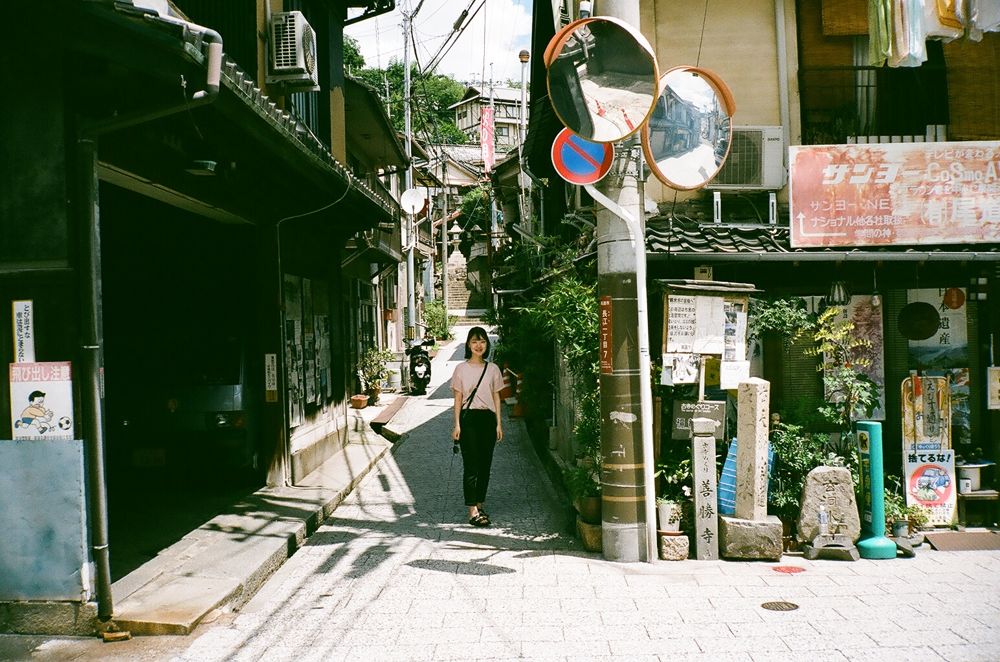
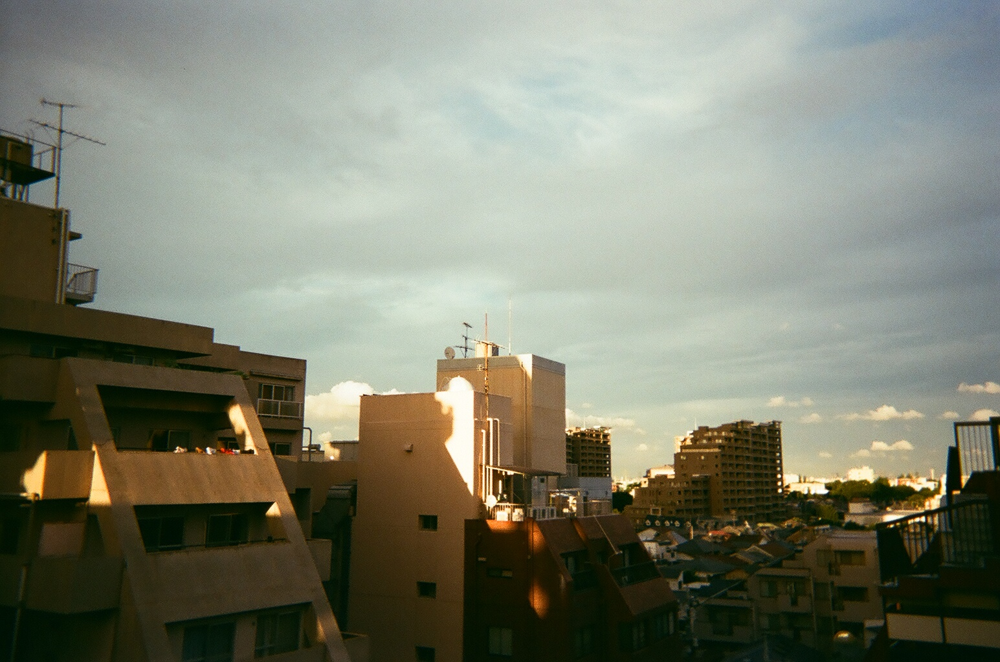
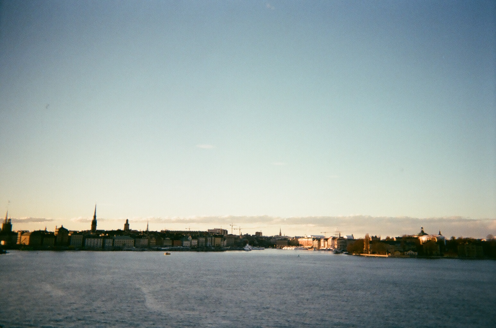

Some mountains // Washington, US
This is where I was born and raised! // Hiroshima, Japan

View of one of the busiest city in the world // Tokyo, Japan
Strolling and looking for some delicious Japanese food // Somewhere in Japan


Spent a week here for a spring break // Stockholm, Sweden
Perks of traveling to Europe is that everything is photogenic// Stockholm, Sweden


Just a random photo I took at UW on a sunny day // Seattle, WA